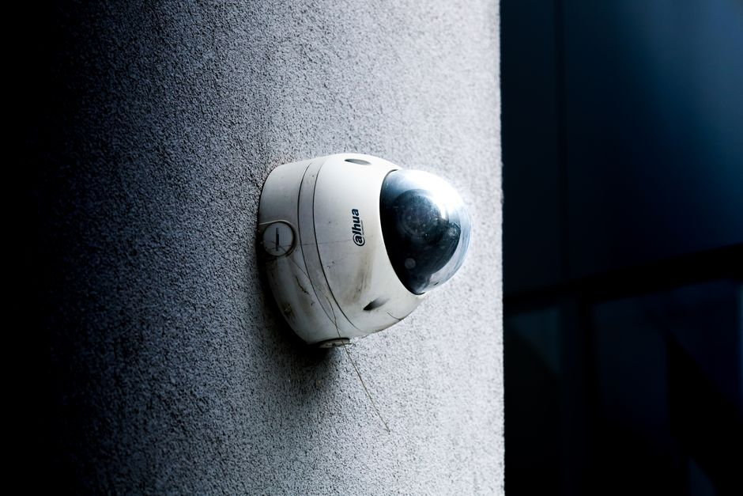

Computer Vision Papers: What Gets Published vs Deployed
A leaderboard win and a production-ready model are not the same achievement, and confusing the two costs teams real time and money.
Two different games
Every year a fresh crop of computer vision papers reports a fraction of a percentage point improvement on a standard benchmark, and every year almost none of those specific architectures end up running inside a phone camera, a warehouse robot, or a medical imaging pipeline. This is not a scandal, it is a structural fact about how the two activities are optimised. A conference paper is optimised to be accepted: it needs a clear novelty claim, a favourable comparison table, and a result that beats or matches prior work on a fixed test set. A deployed system is optimised to keep working: it needs to handle unseen lighting, unusual camera angles, adversarial users, latency budgets, and a maintenance team that did not write the original code.
I think the confusion arises because both activities use the same vocabulary, the same datasets, and often the same authors. A paper and a production system can both claim to do object detection, but the paper is answering the question can this idea improve accuracy under controlled conditions, while the deployed system is answering does this keep working when the conditions I controlled for stop holding. Those are different questions, and a method can score well on the first while failing badly on the second.
Consider a concrete case. Suppose a new detector reports 52.3 mean average precision on a well-known benchmark, half a point above the previous state of the art, achieved with a heavier backbone and a more complex training recipe. That half point is genuinely earned under the benchmark's rules. But if the backbone triples inference latency and the training recipe requires a specific augmentation pipeline that only works because the benchmark's images share a narrow distribution of resolutions and object scales, none of that half point tells you anything about behaviour on, say, CCTV footage at night with motion blur. The benchmark improvement and the deployment improvement are simply not the same currency.
Where the incentives diverge
Conference reviewing rewards a specific shape of contribution: a clean ablation table, a plausible architectural story, and beating the field on one or two headline metrics. This pushes researchers towards changes that move a metric on a fixed, well-studied test set, because that is verifiable and citable. It does not particularly reward robustness to distribution shift, calibration of confidence scores, graceful degradation under occlusion, or the kind of boring engineering that makes a model survive six months of real traffic. Those properties are hard to reduce to a single number in a comparison table, so they get mentioned in a limitations paragraph, if at all.
Deployment incentives point the other way. A team shipping a defect-detection model on a factory line cares far less about squeezing out an extra half point of average precision than about the false negative rate on the specific defect types that cost the most money, the ninety-fifth percentile latency on the actual edge hardware, and how the model behaves when a camera lens gets slightly dusty. None of that shows up on a benchmark leaderboard, because leaderboards are built to be stable and comparable across years, which means they deliberately exclude the messy, site-specific variation that dominates real deployment.
There is also a data leakage problem that quietly inflates published numbers relative to what deployment will show. Many benchmark test sets have been public for years, meaning some published methods, even unintentionally, benefit from hyperparameters tuned across many submissions that effectively peek at the test distribution. A model tuned this way might report a genuine 91 percent accuracy on the benchmark's test split, yet drop to something like 78 percent on a freshly collected dataset drawn from the same task but a different camera and location. That thirteen-point gap is not a research failure so much as a reminder that a static test set eventually stops measuring generalisation and starts measuring familiarity with itself.

What actually survives the transition
The methods that do make it into production tend to share a few unglamorous traits. They are usually a generation or two behind the current state of the art in raw benchmark score, because production teams favour architectures with mature tooling, predictable failure modes, and enough deployment history that their quirks are documented somewhere other than a single paper's appendix. A well-understood convolutional backbone with known quantisation behaviour often beats a newer, more accurate architecture whose behaviour under eight-bit inference on embedded hardware has never been characterised.
Data quality and evaluation design also matter more in practice than architecture choice. A team that builds a genuinely representative validation set, one that mirrors the lighting, camera hardware, and edge cases of the deployment environment, will often catch a 15 percent relative error increase that a benchmark-style split would never reveal, simply because the benchmark split shares the same collection biases as its own training data. This is the leakage-aware thinking that matters far more once a model leaves the lab: your validation set should look like tomorrow's production traffic, not like yesterday's training distribution reshuffled.
Reproducibility is the other quiet differentiator. A paper's result is reproducible if another lab can rerun the code and get a similar number on the same test set. A deployment is reproducible if the same model, retrained next quarter on refreshed data with a slightly different label distribution, still meets its service-level target. These are different bars, and the second one is considerably harder, because it has to survive changes in the world, not just changes in random seed.
A practical takeaway
None of this means published research is useless for practitioners, far from it. It means the right habit is to treat a leaderboard result as a hypothesis about an idea's usefulness, not as a verdict on production readiness. Before adopting a new architecture, I would want to see its behaviour on a held-out set that was collected after the method was designed, ideally from a source the authors never touched, and I would want latency and calibration numbers alongside accuracy, not accuracy alone.
The single most useful discipline is building your own small, honest, out-of-distribution test set early, even a few hundred images gathered from the actual deployment context, and refusing to trust any benchmark number until it has been checked against that set. A method that only shines on data it was implicitly tuned against was never really solving your problem, it was solving the benchmark's problem, and those two problems only look the same from a distance.